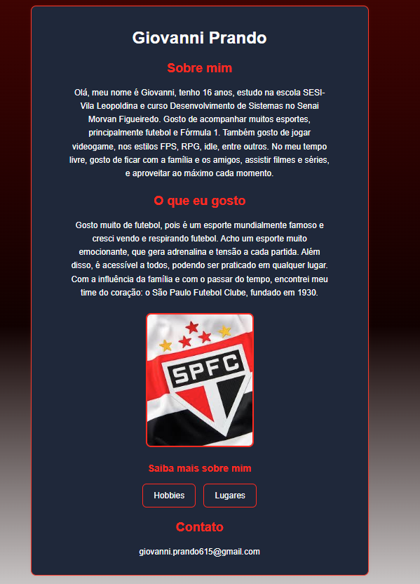

Css Parte 1
Aprendendo a criar estilos CSS para melhorar a aparência de páginas web.
O que aprendi
Nessa aula, aprendi sobre o CSS, que é a linguagem de estilo usada para definir a aparência de páginas web. Aprendi sobre as diferentes propriedades e seletores disponíveis para estilizar elementos HTML, como cores, fontes, margens e muito mais. Além disso, tive a oportunidade de praticar criando estilos CSS para minhas páginas HTML usando o VS Code, o que me ajudou a entender melhor como o CSS funciona e como os estilos são aplicados aos elementos da página.
O que desenvolvi
Nessa aula, desenvolvi estilos CSS para melhorar a aparência de minhas páginas HTML. Pratiquei o uso de propriedades como color, font-size, margin e padding para criar um design mais atraente e responsivo. Além disso, aprendi sobre seletores e como aplicar estilos a diferentes elementos da página.
Projeto(s)

Conhecimentos Adquiridos
- Sintaxe do CSS 100%
- Fontes 100%
- Seletores do CSS 100%
- Cores 100%
Desafios
São muitas coisas sobre Css para aprender oq difilculta decorar e aprender muitas funcionalidades.